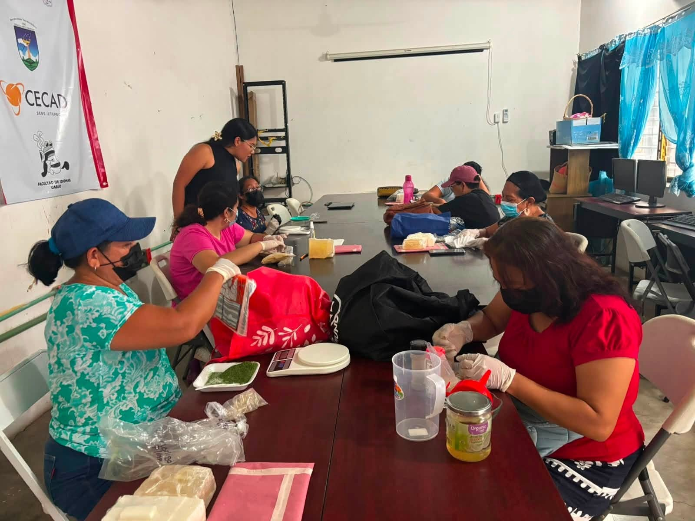
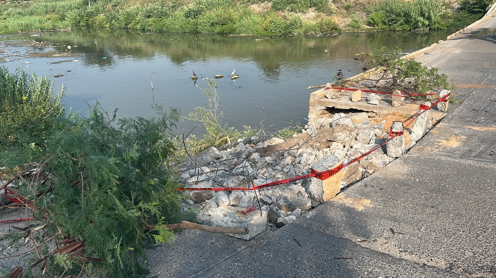
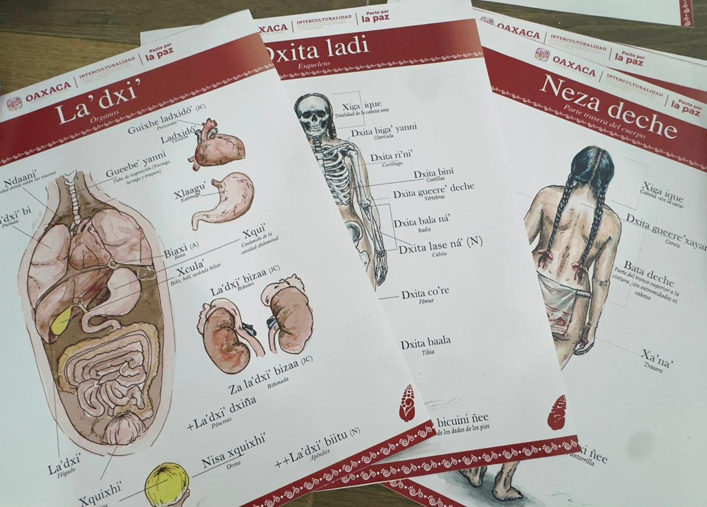
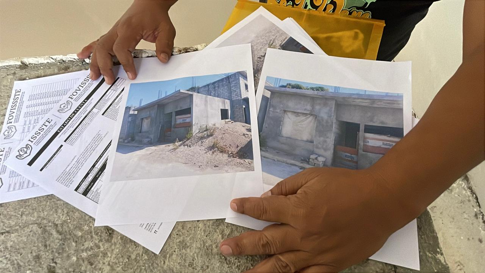
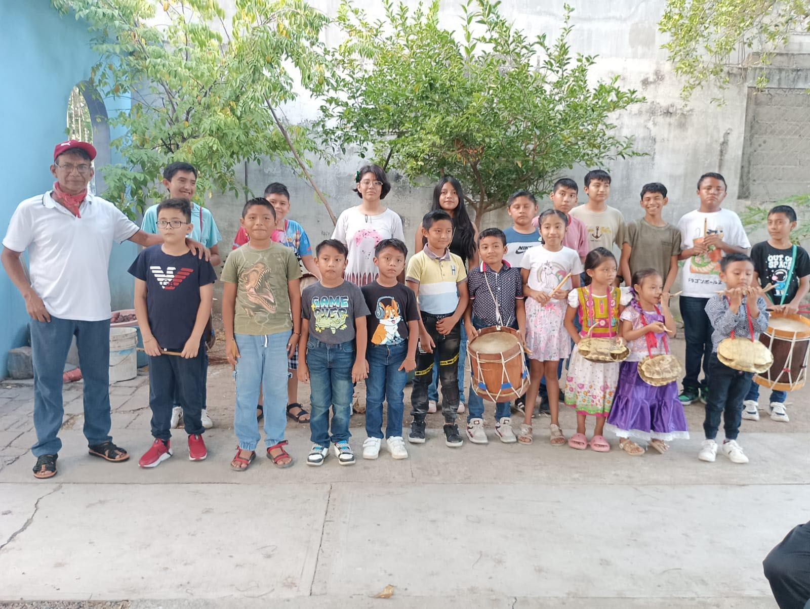

El Gobierno Municipal de Ixtepec, a través de la Dirección de Proyectos Municipales, continúa fortaleciendo el programa Ixtepec Productivo
Como parte de las actividades del Taller de Herbolaria, hoy las asistentes participaron en una sesión práctica de elaboración de cápsulas medicinales, adquiriendo nuevos conocimientos y habilidades para el aprovechamiento de las plantas medicinales en beneficio de su bienestar y el de sus familias.
Ver más
CIERRE PARCIAL DEL VADO DE LA QUINTA SECCIÓN
La Coordinación Municipal de Protección Civil Juchitán informa a la ciudadanía en general que, debido a la ejecución de trabajos necesarios de reparación en la estructura, a partir de estos momentos se mantendrá un cierre parcial en el Vado de la Quinta Sección.
Ver másOaxaca está preparado para vivir la Guelaguetza en un ambiente de paz, orden y tranquilidad
En el marco de las festividades de la Guelaguetza, el Gobierno del Estado mantiene las condiciones de gobernabilidad y coordinación necesarias para que las familias oaxaqueñas y quienes visitan la entidad disfruten de nuestra máxima fiesta en un ambiente de paz, orden y tranquilidad.
Ver más"Taxi Gunaa": traslados seguros para mujeres durante la Guelaguetza
Santa Lucía del Camino, Oax. 16 de julio de 2026.- La Secretaría de Movilidad (Semovi) dio el banderazo de inicio del programa Traslados Seguros con Taxi Gunaa, estrategia que ofrecerá a las mujeres servicio de transporte durante la Feria del Mezcal.
Ver másEl Pueblo que lee "Proyecto independiente de promoción de la Lectura"
En una región donde las expresiones culturales forman parte de la vida cotidiana, un proyecto ciudadano ha encontrado en los libros una herramienta para fortalecer el conocimiento, la imaginación y el pensamiento crítico.
Ver másLlegada de segunda carga de vehículos Hyundai, reafirma potencial y éxito de Corredor Interoceánico
El traslado de las unidades reafirma el potencial del CIIT para ofrecer soluciones logísticas eficientes y fortalecer las cadenas de suministro nacionales e internacionales.
Ver más
Elabora SIPCIA material sobre el cuerpo humano en zapoteco para unidades médicas
El paquete de material didáctico va acompañado de una presentación elaborado por el titular de SIPCIA, donde explica cómo se nombra cada parte de la superficie externa como interna del cuerpo humano.
Ver másTLACOLULA REAFIRMA SU COMPROMISO CON MÉXICO
La mañana de este domingo, el Gobernador del Estado, Ing. Salomón Jara Cruz, acudió en la población de Tlacolula de Matamoros, donde, junto con cientos de mujeres y hombres, se llevó a cabo la Asamblea en Defensa de la Soberanía Nacional.
Ver másENTREGA MIGUEL QUETU NUEVAS MOTOPATRULLAS PARA REFORZAR RECORRIDOS DE LA POLICÍA MUNICIPAL EN JUCHITÁN
Durante su mensaje, el alcalde juchiteco señaló que estas nuevas unidades permitirán que el Grupo de reacción inmediata de la Policía Municipal tenga mayor presencia en calles y colonias de Juchitán.
Ver másARRANCA IEEPO Y GOBIERNO JUCHITECO LA ESTRATEGIA “SEMILLA PARA UN MEJOR FUTURO”
La estrategia impulsa conferencias, talleres y actividades culturales para fortalecer la identidad juvenil y orientar su futuro.
Ver más
Denuncian derechohabientes del FOVISSSTE obras inconclusas pese a descuentos salariales en el Istmo.
Derechohabientes del Fondo de la Vivienda del ISSSTE (FOVISSSTE) en la región del Istmo de Tehuantepec, denunciaron que a pesar de los descuentos que se les aplican puntualmente en sus salarios por créditos de vivienda, las obras de sus casas permanecen inconclusas, lo que les ha generado la inconformidad.
Ver másLa Universidad CESEEO fortalece el respeto a la historia de México.
Alumnos del CENDI-PRESCOLAR 21 de Septiembre festejaron el 115 aniversario de la Revolución Mexicana. Comunicación Social de la Universidad CESEEO. Juchitán Oaxaca.
Ver másGOBIERNO JUCHITECO LLEVA PROGRAMA “NO MANCHES, ES TU VIDA” A ESCUELAS PARA DIALOGAR CON ADOLESCENTES SOBRE RIESGOS ACTUALES
Con un diálogo abierto y sin rodeos, el programa municipal de prevención social “No manches, es tu vida” llegó a la Escuela Secundaria General Enedino Jiménez Jiménez para generar conversaciones directas y sinceras con las y los adolescentes sobre las situaciones que enfrentan en su vida diaria.
Ver más
34 AÑOS RESCATANDO LA MÚSICA ANCESTRAL
La Música Ancestral es hoy un referente cultural en Juchitán y en toda la región del Istmo.
Ver másInaugura la presidenta Sheinbaum el primer tramo de la línea K del Tren Interoceánico del Istmo de Tehuantepec.
Con la presencia de la presidenta Claudia Sheinbaum, este día se puso en marcha el primer tramo del Tren Interoceánico de la línea K.
Ver más